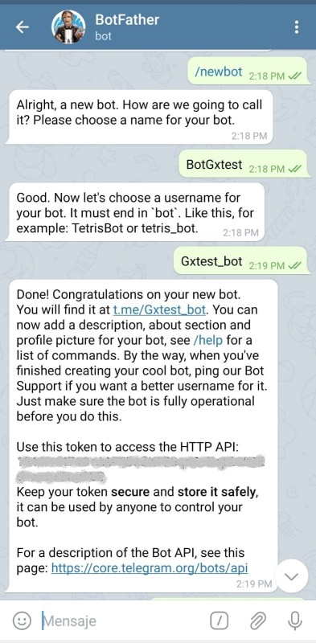
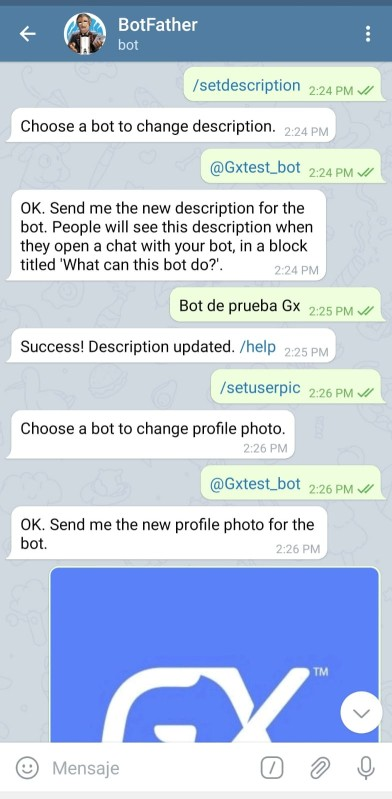
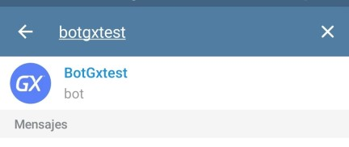
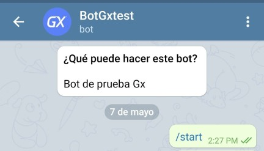

First of all, it is important to highlight what Telegram offers you in terms of conversational interfaces and how they work. To this end, the BotFather concept should be mentioned.
BotFather is a bot managed by Telegram that centralizes the creation and configuration of bots. It is a user with @botfather username that allows you to access your bot's settings by following some commands. In short, Telegram bots are special accounts that do not require a phone number to be set up.
Telegram does not treat bots as ordinary users, but rather distinguishes them. Here are some important considerations:
Steps to create and configure a bot in Telegram:
First, in the Telegram search engine, find the ¨BotFather¨ and send the command /newbot. After sending the /newbot command, it will ask you for a name and username for the bot; this username is what identifies your bot and cannot be repeated in the system.
Once the registration of the new bot is completed, you will be issued a token. You must keep this token safe because it will identify your bot and you will have to configure it in the Telegram Bot Token property.
The image below shows the previous steps:

Once the bot has been created, you will be able to perform several actions from the Botfather of your choice, such as changing the bot's profile picture and description:

Next, go to the Telegram search engine and confirm that it has been created correctly.

Finally, from Telegram, start a conversation with the bot using the /start command:

Enable Telegram property
Telegram Bot Token property
| Backlinks |
| How to: Chatbots using Telegram |